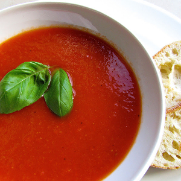

Tomatensoep
Recept
Soepen worden meestal geserveerd als voorgerecht wanneer het een dunne soep betreft, maar een dikkere en voedzame soep kan ook heel goed als hoofdgerecht dienen. Soep bevat altijd een bepaald aantal bestandsdelen en dit geldt ook wanneer er een tomatensoep gemaakt word. Verse tomatensoep is heel erg makkelijk te maken en bovendien goedkoper en lekkerder dan soep uit blik!Ingredienten
- 1 ui, gesnipperd
- 2 tenen knoflook, fijngesneden
- 750 gr romatomaten, in parten
- 750 ml water
- 2 groentebouillontabletten
- 1 klein blikje tomatenpuree
- 2 eetl kookroom
- 2 eetl olijfolie
- Stokbrood of croutons
Bereidingswijze
Zet een soeppan op het vuur en fruit de ui en knoflook ongeveer 3 min in de olijfolie. Voeg de tomaten parten toe en bak deze 10 min mee. Voeg het water en de bouillontabletten toe en roer de tomatenpuree er door. Pureer nu alles met een staafmixer en laat een paar minuutjes doorkoken. Serveer in 4 borden of kommen. Schenk in elk bord of kom een klein scheutje kookroom. Serveer met het stokbrood of met croutons.bron
